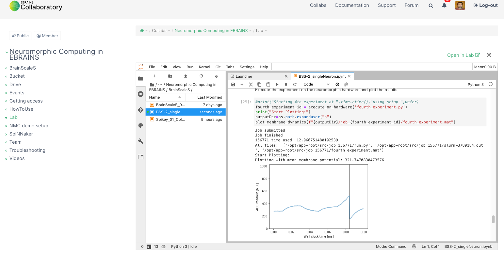
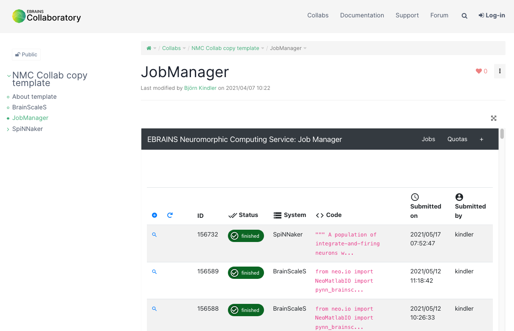
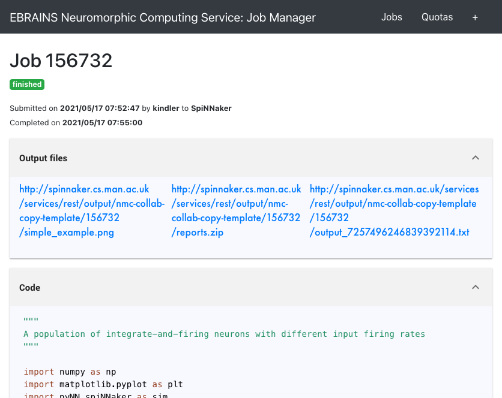
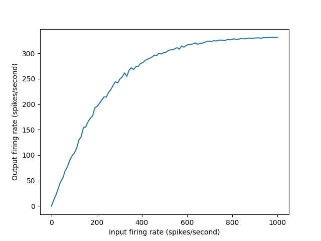

Getting started¶
To use the Neuromorphic Computing systems you will need to:
create an EBRAINS account (available on request), free of charge
send an email with your EBRAINS username to neuromorphic@humanbrainproject.eu
You will get a Collaboratory created with a test-quota to access the BrainScaleS and SpiNNaker machines, pre-loaded with some examples how to access the systems. (The Collaboratory or “Collab” is a collaborative workspace, which i.a. contains file storage space, wiki pages and the JupyterLab to run python programs just via the webbrowser)
You can then:
Add team members to your Collab using the “Team” link in the navigation bar on the left. Only members of the team will be able to launch simulations.
Run simulations: via the Jupyter notebooks with in the “Lab” or by submitting scripts using the “Job Manager” link.
Running via JupyterLab via NMPI¶
To submit a simulation in “batch” mode using the Jupyter notebooks via the “Lab”:
open one of the example notebooks
execute the cells. This:
prepares the execution environment
writes the experiment description PyNN script as a file
sends this file (in the
`job = client.submit_job( ...)`step) to the SpiNNaker system in Manchester or the BrainScaleS system in Heidelbergwaits for the job to finish
transfers the result files back to the system, where the Jupyter process is running on the Collab
The results can then be shown and analysed in the notebook.
{kind=link}
As this mode of operation sends the experiment description as file to the machine site for execution and then waits for the result files to be transferred back, there is no interactive interaction with the running network simulation (SpiNNaker) or emulation (BrainScaleS) network possible (“batch” operation).
For SpiNNaker there is also a Manchester-local Jupyter installation accessible (via the SpiNNaker > SpiNNaker interactive menu item in the left hand navigation of your Collab).
Running via the JobManager¶
To submit a simulation via the “Job Manager”
open the “Job Manager” from the left hand navigation of your Collab
press “+” icon in the table header to add a new job
in the “New job” form
select “SpiNNaker” in the Hardware Platform drop-down menu
then enter Python code in the “Code” text box, for example the following short script, which simulates a population of integrate-and-firing neurons with different input firing rates:
"""
A population of integrate-and-firing neurons with different input firing rates
"""
import numpy as np
import matplotlib.pyplot as plt
import pyNN.spiNNaker as sim
sim.setup(timestep=1.0, min_delay=1.0)
# create cells
cell_params = {
'cm': 0.25, 'tau_m': 10.0, 'tau_refrac': 2.0,
'tau_syn_E': 2.5, 'tau_syn_I': 2.5,
'v_reset': -70.0, 'v_rest': -65.0, 'v_thresh': -55.0}
neurons = sim.Population(100, sim.IF_cond_exp(**cell_params))
inputs = sim.Population(100, sim.SpikeSourcePoisson(rate=0.0))
# set input firing rates as a linear function of cell index
input_firing_rates = np.linspace(0.0, 1000.0, num=inputs.size)
inputs.set(rate=input_firing_rates)
# create one-to-one connections
wiring = sim.OneToOneConnector()
static_synapse = sim.StaticSynapse(weight=0.1, delay=2.0)
connections = sim.Projection(inputs, neurons, wiring, static_synapse)
# configure recording
neurons.record('spikes')
# run simulation
sim_duration = 10.0 # seconds
sim.run(sim_duration * 1000.0)
# retrieve recorded data
spike_counts = neurons.get_spike_counts()
print(spike_counts)
output_firing_rates = np.array(
[value for (key, value) in sorted(spike_counts.items())])/sim_duration
# plot graph
plt.plot(input_firing_rates, output_firing_rates)
plt.xlabel("Input firing rate (spikes/second)")
plt.ylabel("Output firing rate (spikes/second)")
plt.savefig("simple_example.png")
Leave the other text boxes empty, and click “Submit”.
The job will be submitted to the queue, and will appear in the list of jobs with a “submitted” label. Unless the platform is very busy, this job should run within a few minutes on the large-scale SpiNNaker system in Manchester. Once the simulation is finished you will receive an e-mail, and on refreshing the job list the status will change to “finished”.
{kind=link}
Once the job is completed, click on the magnifying glass icon to see the job results.
{kind=link}
In the “Output files” part you will find a link to the created plot (a .png file):
{kind=link}
For more information on running simulations with the platform, see Submitting a simulation job.
Copy data to longer-term storage¶
The results of your simulation are now available on a file server attached to the SpiNNaker system. This storage is only temporary, however; after three months, your files may be deleted to free up space.
If you need to keep the files please download them to your local machine.
When the test-quota is used up¶
Using the Job Manager you can request more quota (only needed, when the test quota has been used up): use the ‘Quotas’ link in the table header.